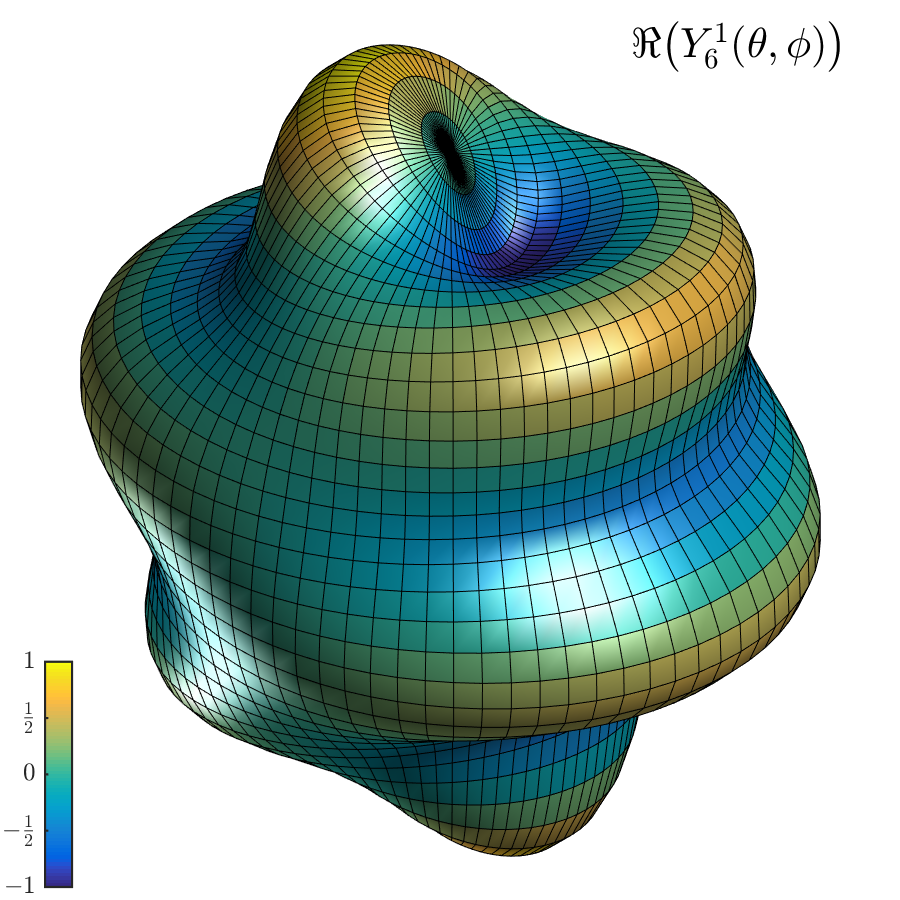

shplot.mThis is adapted from the MATLAB® example code webpage here
function []=shplot
%SHPLOT plot a spherical harmonic based on example found at
% http://www.mathworks.com/examples/matlab/1226-animating-a-surface
l=6; % degree
m=1; % order
% visual appearance
bump_height=0.25;
ref_sphere=1.0;
colormap('default')
tt=linspace(0,pi,41);
pp=linspace(0,2*pi,81);
[phi,theta]=meshgrid(pp,tt); % define the mesh
Yl=legendre(l,cos(tt)); % [Y_l^0; Y_l^1; Y_l^2; ... ; Y_l^l]
Ylm=Yl(m+1,:)'; % pull out Y_l^m (evaluated on theta vector tt)
% unnormalized spherical harmonic evalated on the mesh
YLM=kron(ones(size(pp)),Ylm).*cos(m*phi);
maxYLM=max(max(abs(YLM)));
YLM=YLM/maxYLM; % normalize entries to interval [-1.0,1.0]
% make radius<=1 an affine mapping of the spherical harmonic
radius=abs(ref_sphere + bump_height*YLM)/(ref_sphere+bump_height);
% convert to 3D Cartesian mesh
rsint=radius.*sin(theta);
x=rsint.*cos(phi);
y=rsint.*sin(phi);
z=radius.*cos(theta);
% set up for cropping to square image
subplot('position',[-0.15 -0.15 1.3 1.3]);
s=surf(x,y,z,YLM); % last argument determines colormap
set(s,'LineWidth',0.1); % for finer lines in printing/png
%set(s,'edgecolor','none');
light; lightangle(260,-45) % add 2 lights
lighting gouraud % preferred lighting for a curved surface
view(40,30) % set viewpoint
maxa=1.0; % max of what radius above can be
axis([-maxa maxa -maxa maxa -maxa maxa]);
axis off
h=colorbar('position',[0.05 0.015 0.03 0.25]);
set(h,'Ticks',[-1,-0.5,0,0.5,1]);
set(h,'tickLabelInterpreter','latex');
set(h,'TickLabels',{'$-1$','$-\frac{1}{2}$','$0$','$\frac{1}{2}$','$1$'});
set(h,'FontSize',12);
Ylmstr=['$\Re\big(Y_{' num2str(l) '}^{' num2str(m) '}(\theta,\phi)\big)$'];
text(0.65,0.8,Ylmstr,'FontSize',20,'Units','normalized','Interpreter','latex')
camzoom(1.15) % zoom into scene
% output to png file to existing figures directory
set(gcf,'PaperUnits','inches','PaperPosition',[0 0 6 6]) %150dpi
saveas(gcf,'figures/shplot','png')
shg
endshplot.png
[06 Sep 2016] —
Latex labels with MATLAB®[21 Jul 2015] —
TikZ–tikzexternalize to png[18 Jul 2015] —
Spherical Harmonics LaTeX Macros[01 Aug 2015] —
BibDesk Publication html Export[06 Aug 2015] —
Spherical Harmonic Plotting with MATLAB®[18 Jul 2015] —
Spherical Harmonics LaTeX Macros[16 Jul 2015] — Spherical Harmonic MATLAB® Code 1 [31 Jul 2015] —
Outputing png from pgfornament[18 Jul 2015] —
Improving Gauss-Legendre{kind=link}